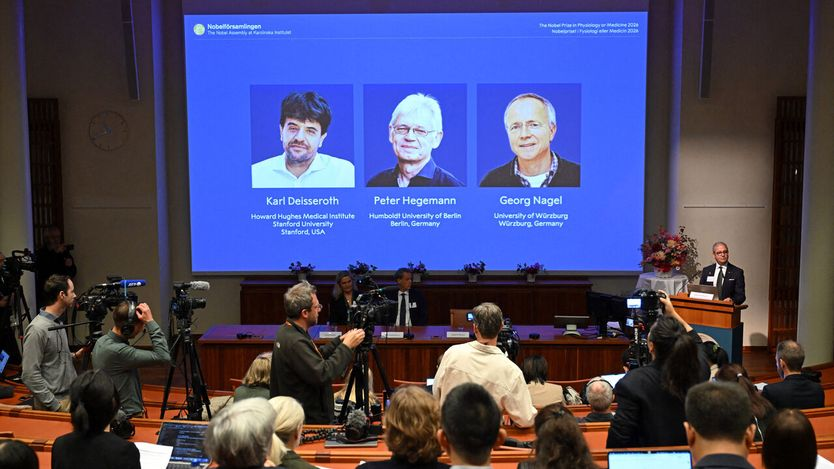

诺贝尔生理学或医学奖授予照亮大脑的技术
The Nobel for medicine goes to lighting up the brain
光遗传学的发明者获奖

- 今年的诺贝尔生理学或医学奖颁给了光遗传学的发明者，而这门技术的起点，是一种在池塘里靠两条鞭毛朝光游动的单细胞小藻类。
- 光遗传学让神经科学家能用光在瞬间开启单个脑细胞，从而弄清大脑里每个细胞究竟在做什么，彻底改变了整个神经科学的研究方式，也让研究者得以追问疾病的神经根源。
- 关键突破发生在1990年代：科学家发现藻类的感光反应比人眼快20倍，随后借助基因组学找到相关基因，把它们植入青蛙卵和哺乳动物细胞，使哺乳动物细胞变得感光。
- 此后研究扩展到活体小鼠，用极细的光纤照射并激活成群的神经元；如今它被用于研究抑郁、精神分裂、失明、痴呆等疾病，甚至尝试为视网膜色素变性患者恢复视力。
莱茵衣藻并不是什么显眼的高端研究题材。它是一种梨形单细胞藻类，靠两条鞭毛在池塘中游动。作为光合生物，它通过把可见光转化为化学能来维生，常靠这两条细小的附属物游向光源。指引它的是由蛋白质构成的一个微红斑点，称为眼点。而研究这个眼点究竟如何工作——这本身就体现了即便最离奇的科学研究也可能有价值——催生了一门名为光遗传学的新学科，也带来了今年的诺贝尔生理学或医学奖。
光遗传学让神经科学家能够用光在瞬间激活单个脑细胞。它因此改变了神经科学，使研究者能够精确弄清特定细胞在做什么，从而既可以探究基础神经生物学，也可以研究疾病的神经机制。
故事始于1990年代，主角是当时在德国马丁斯里德马克斯·普朗克生物化学研究所的彼得·黑格曼。黑格曼当时在研究衣藻对光的电反应。他发现这种反应比人眼的同类反应快20倍。在人眼视网膜中，一个蛋白质分子探测到光，然后通过一连串分子相互作用触发另一个称为离子通道的分子，产生电信号。黑格曼推测，在他研究的藻类体内，这一迂回的过程被压缩了。
用当时可用的工具验证这一猜想十分困难，直到基因组学的兴起帮了他。一个日本研究团队绘制出了衣藻的DNA图谱，显示其中包含两个基因，与其他一些生物体内感光蛋白的基因相似。当黑格曼请同事、当时在法兰克福马克斯·普朗克生物物理园区的格奥尔格·纳格尔协助后，这一洞见得到了证实。纳格尔（他同样分享了今年的奖项）把这两个新识别基因的DNA植入一些青蛙卵，卵随后表达出数量足够供测试的目标蛋白。正如黑格曼预测的那样，它们是被光激活的离子通道。
意识到自己的发现意味着什么后，纳格尔和黑格曼又尝试把其中一个基因（对应如今称为视紫红质通道蛋白-2的蛋白质）植入从仓鼠和人类胚胎中取得的肾细胞。这也成功了。换句话说，他们找到了一种让哺乳动物细胞变得感光的办法。
故事的后续部分由今年的第三位获奖者、当时在斯坦福大学的卡尔·戴瑟罗思补全。正是他想到要把视紫红质通道蛋白-2植入那些存在的意义就是传递电信号的细胞：神经元。测试这一想法时，培养的大鼠神经元不仅在被光照射时产生反应，还能把信号传递给相邻细胞。
宣布这一发现的论文发表于2005年，但其他研究者也在探索类似思路。三年前，当时在纽约纪念斯隆-凯特琳癌症中心的格罗·米森伯克用来自果蝇的一种感光蛋白做过类似工作。正如周一发布会现场一位听众所指出的，米森伯克或许有充分的理由感到不快。
不过，无论优先权细节如何，这一领域此后爆发式发展。戴瑟罗思的实验室走在前列，先是把在培养大鼠细胞中做到的事情复制到活体小鼠大脑中，随后又发明了用极细的光纤照射并刺激神经元集群的办法。这些技巧结合起来，让研究人员能够控制小鼠胡须的动作。
此后，光遗传学成为数千篇论文的研究对象。它正被用于实验室动物，以研究抑郁症、精神分裂症、失明、失聪、痴呆、成瘾和焦虑。甚至有人尝试用它为一种名为视网膜色素变性的失明患者恢复视力。巨大的橡树由小小的橡子长成。在这个例子里，是小小的藻类。■